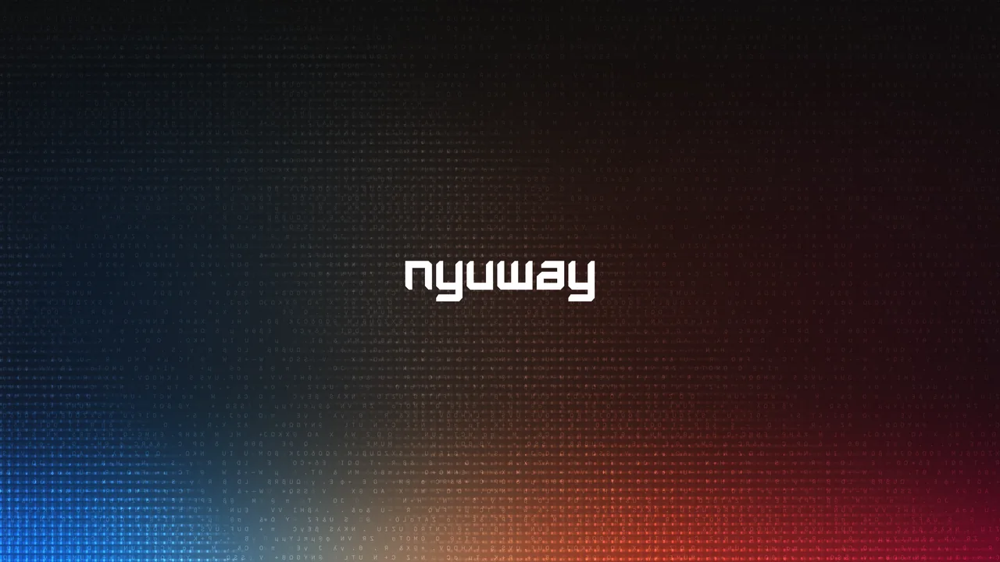

Every startup starts as a story. I help founders tell it through brand, product and marketing, so the idea feels real from day one. These are some of my work
Tejas Rajagopal
Brand-led generalist designer for fintech, AI and crypto. A few favourites from the archive.
5+ Years working at
mpayMARAFlipkartDEZERVCur
Fig. 01—
Drag to spin